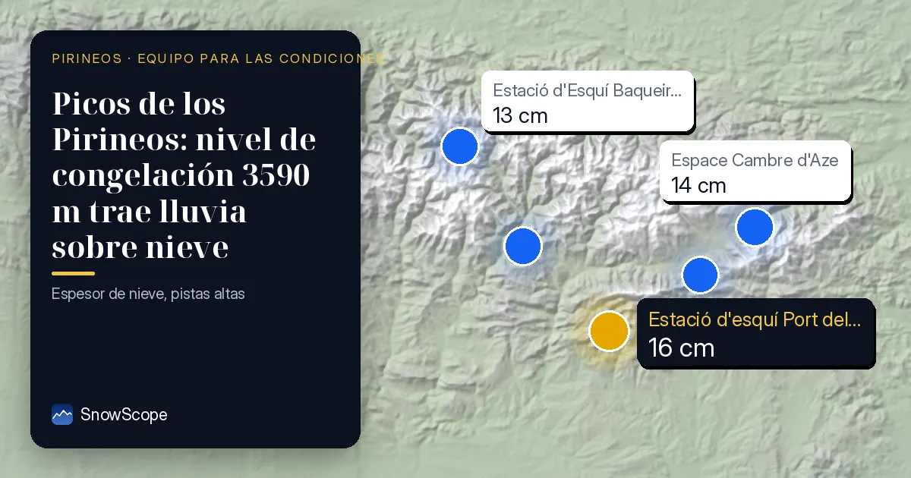
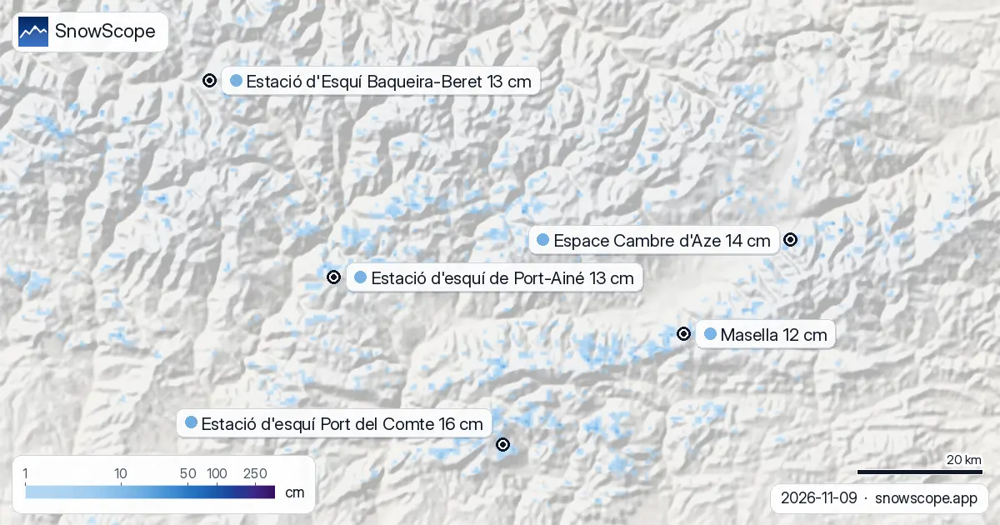

Picos de los Pirineos: nivel de congelación 3590 m trae lluvia sobre nieve
El nivel de congelación en los Pirineos alcanzará los 3590 metros el lunes, superando incluso los terminales de los telesillas más altos. Esto significa que el agua se filtrará en el manto de nieve en lugar de caer como nieve, saturando capas delgadas y formando una costra en cuestión de horas—lleva equipo de lluvia, no chaquetas de invierno.
Consulta la previsión de nieve en tiempo real de Estació d'esquí Port del Comte en la app SnowScopeEspesor de nieve, alertas de nieve polvo y mapa 3D, gratis.
La lluvia sobre nieve llega cuando el nivel de congelación supera las montañas
Cuando el nivel de congelación sube por encima de la cumbre de una cordillera, todo el manto de nieve queda expuesto al agua líquida que cae desde arriba. En Estació d'esquí Port del Comte (cumbre 2122 m), Espace Cambre d'Aze (2377 m), Estació d'Esquí Baqueira-Beret (2600 m), Estació d'esquí de Port-Ainé (2424 m), y Masella (2509 m), la masa de aire será lo suficientemente cálida para traer lluvia hasta la base. Esa agua no se escurre simplemente; penetra el manto de nieve existente, saturando los cristales e iniciando una consolidación rápida y ciclos de congelación-descongelación. Por la tarde, cuando las temperaturas bajen de nuevo, se formará una costra—dura y de grosor variable, dependiendo del viento y la orientación de la ladera.
| Estación | Espesor de nieve | Nieve nueva, 72 h | Previsto, próximos días | Cota máx. |
|---|---|---|---|---|
| Estació d'esquí Port del Comte | 16 cm | 0 cm | 0 cm | 2122 m |
| Espace Cambre d'Aze | 14 cm | 0 cm | 0 cm | 2377 m |
| Estació d'Esquí Baqueira-Beret | 13 cm | 0 cm | 1 cm | 2600 m |
| Estació d'esquí de Port-Ainé | 13 cm | 0 cm | 0 cm | 2424 m |
| Masella | 12 cm | 0 cm | 0 cm | 2509 m |

Profundidades superiores de 12–16 cm significan infiltración rápida de agua
Las profundidades en las laderas superiores hoy varían desde 12 cm en Masella hasta 16 cm en Estació d'esquí Port del Comte. No ha caído nieve nueva en las últimas 72 horas en los cinco centros, y se pronostica nieve mínima—solo 1 cm en Estació d'Esquí Baqueira-Beret antes del 12 de noviembre. Esto significa que el manto de nieve ya es vulnerable a la saturación. Cuando la lluvia cae sobre una cobertura tan delgada, llega al suelo subyacente o a rocas expuestas en cuestión de minutos, saturando toda la columna de arriba a abajo. El agua luego se vuelve a congelar durante las noches más frías del 10–12 de noviembre, creando una costra densa y desigual que es implacable bajo los pies.

Equipo para protección genuinamente impermeable
Tu equipo exterior hoy debe ser impermeable, no simplemente resistente al agua. Una chaqueta de lluvia y tirantes impermeables con costuras completamente selladas son innegociables; Gore-Tex o materiales equivalentes repelen la lluvia permitiendo cierta transpirabilidad. Polainas térmicas o polainas de puño alto son esenciales para evitar que el agua entre en tus botas mientras atraviesas secciones mojadas y charcos. Los calcetines de lana o sintéticos superan al algodón, que absorbe humedad y pierde aislamiento cuando se satura. Una braga de cuello o un pasamontañas protege tu cara y cuello del rocío de viento en laderas mojadas y de la niebla que a menudo se forma cerca del nivel de condensación cuando el aire cálido y húmedo se encuentra con el aire frío de la montaña.
Estrategia bajo los pies para costra y nieve delgada
La costra mojada exige especial cuidado con la selección y mantenimiento de la tabla. La cera fresca, apropiada para la temperatura y adecuada para condiciones húmedas, ayudará a tu base a funcionar de manera predecible en la costra comparado con bases oxidadas, que tienden a engancharse y ralentizarse. Un canto afilado puede enganchar inesperadamente en una costra dura; para los primeros descensos del día, considera un canto ligeramente desafilado hasta que sientas cómo la costra se rompe y se consolida. Si te aventuras fuera de pista después de la lluvia, trata la estabilidad como incierta y cambiante: el agua que se filtra a través de la nieve delgada cambia el balance de fuerzas rápida y localmente. Consulta el boletín oficial de aludes de los Pirineos antes de esquiar más allá del terreno marcado.
El frío vuelve, pero la costra permanece
Del 10 al 12 de noviembre, la región se enfriará gradualmente. El nivel de congelación baja a 2960–3010 metros el 10 de noviembre, a 2920–3030 metros el 11 de noviembre, y a 2750–2820 metros el 12 de noviembre. Cualquier precipitación fresca caerá nuevamente como nieve en elevaciones más altas, aunque los volúmenes serán pequeños. Sin embargo, el manto de nieve subyacente seguirá siendo delgado, y la costra de lluvia de hoy persistirá como una base rígida. El esquí de principios de temporada sobre costra que cubre nieve delgada requiere disciplina y control técnico; las condiciones de polvo significativas no volverán hasta que lleguen nevadas sustanciales.
Consejos para esquiadores
- Lleva una chaqueta de lluvia y tirantes impermeables con costuras completamente selladas, con una resistencia de al menos 10 000 mm; las chaquetas shell de invierno estándar no te mantendrán seco en el aguacero de hoy.
- Trae polainas térmicas o polainas de puño alto para gestionar la entrada de agua en el tobillo; la saturación de tus botas hará que tus pies se enfríen y adormezcan rápidamente en la nieve mojada.
- Encera tus bases con cera de temperatura fría formulada para nieve mojada y pesada para mantener el deslizamiento en la costra que se formará durante la noche.
- Verifica el boletín oficial de aludes de los Pirineos antes de esquiar fuera de pista; los eventos de lluvia sobre nieve aceleran la inestabilidad en mantos de nieve delgados.
- Prioriza descensos en elevaciones más altas donde la temperatura del aire es más fresca y la costra será menos severa; las laderas bajas serán más pesadas, más lentas y más saturadas.
Sobre estas cifras
Los espesores de nieve de las estaciones son la nieve más profunda en las pistas altas según el modelo de nieve de SnowScope (unos 1 km, cálculo del 9 de noviembre); son estimaciones para una zona, no una medida en un punto. Los valores de las estaciones de medida son medidas en la fecha indicada. Las previsiones pueden cambiar. Consulta siempre el boletín oficial de aludes antes de salir fuera de pista.
Boletines oficiales de aludes: Météo-France / Meteocat / AEMET
Citar este informe
Para investigación, docencia o prensa: cifras y gráficos reutilizables libremente bajo CC BY 4.0 con esta cita.
SnowScope (2026), Picos de los Pirineos: nivel de congelación 3590 m trae lluvia sobre nieve, https://snowscope.app/blog/es/2026/11/pyrenees-what-to-bring-ski-gear-conditions-9-november-2026.html, consultado el 2026-11-09
SnowScope (Atlas Labs). (2026, November 9). Picos de los Pirineos: nivel de congelación 3590 m trae lluvia sobre nieve. SnowScope snow reports. https://snowscope.app/blog/es/2026/11/pyrenees-what-to-bring-ski-gear-conditions-9-november-2026.html
BibTeX
@misc{snowscope2026pyreneeswhattobringskige,
author = {{SnowScope (Atlas Labs)}},
title = {Picos de los Pirineos: nivel de congelación 3590 m trae lluvia sobre nieve},
year = {2026},
month = nov,
howpublished = {\url{https://snowscope.app/blog/es/2026/11/pyrenees-what-to-bring-ski-gear-conditions-9-november-2026.html}},
note = {Published 2026-11-09 12:59 UTC; accessed 2026-11-09}
}· CC BY 4.0 · Métodos, datos y herramientas →
Sigue Estació d'esquí Port del Comte
Gratis: un aviso cuando llega la nieve y la previsión cada mañana.
Más partes de nieve

Cómo aprovechar un día en Luz-Ardiden, una pequeña estación sobre Luz-Saint-Sauveur en los Altos Pirineos: la carretera, los dos sectores, la nieve de 46 inviernos pasados y qué semanas elegir.

El nivel de congelación alcanza 3400m–3600m durante los próximos tres días, trayendo lluvia al manto de nieve del 09 al 11 de noviembre. Previsión del 08 de noviembre.

Cuánto tiempo estuvieron blancos los Pirineos cada invierno desde 2000-01, vistos por satélite, y el espesor de nieve en 10 estaciones con series largas. Tres inviernos flojos seguidos terminaron en 2025-26; este otoño ha empezado con normalidad.